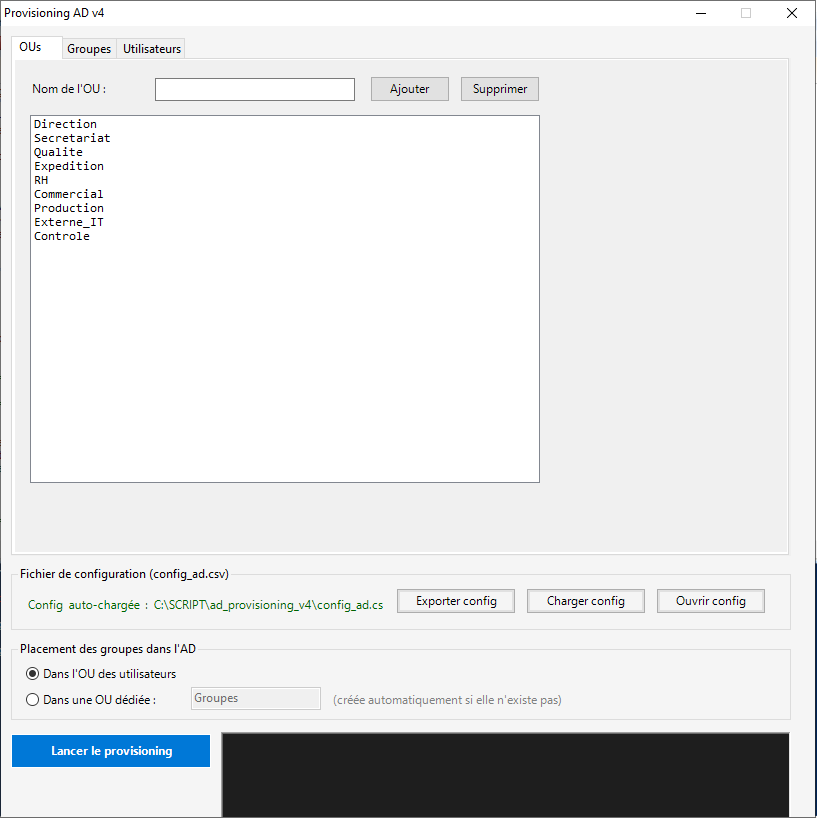
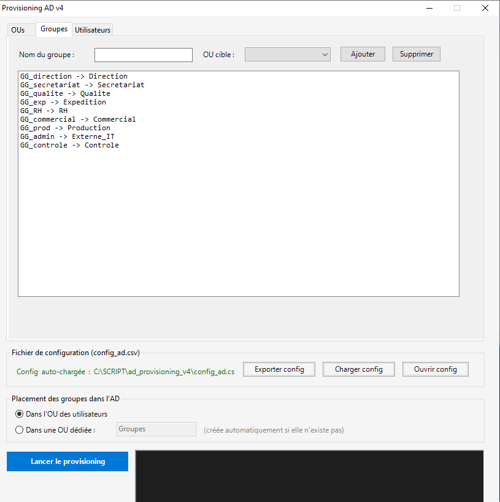
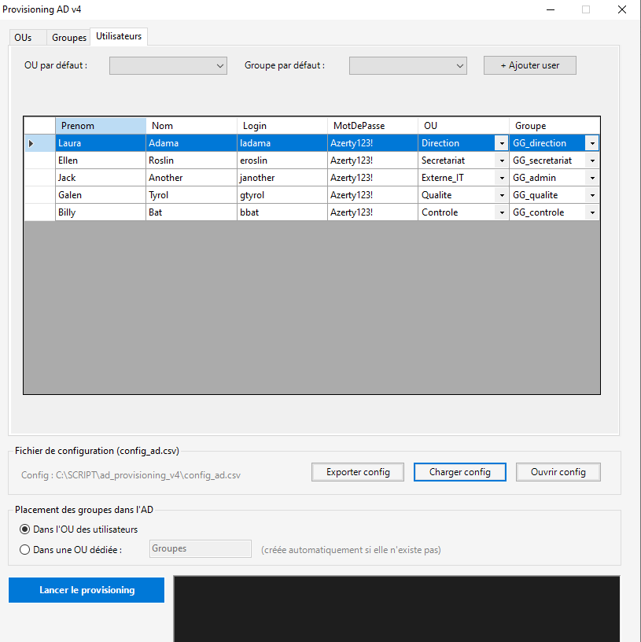

Projets



Provisioning AD — PowerShell
TerminéInterface Windows Forms pour le provisionnement en masse d'utilisateurs Active Directory depuis un fichier CSV : création d'OUs, de groupes et d'utilisateurs, import/export de configuration, mise à jour de la config AD directement depuis le script.
Voir sur GitHub →Contact
Tu peux me contacter par email ou retrouver mes projets sur GitHub.
anotherj4ck@gmail.com github.com/anotherj4ck